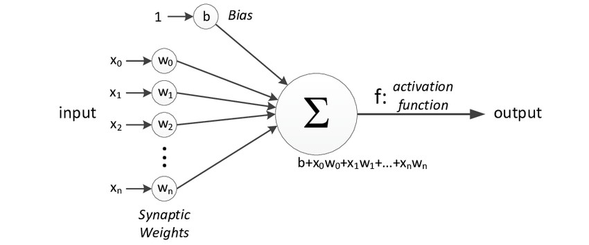

005 : Neural Network Implementation
Artificial Neural Networks or ANN is an information processing paradigm that is inspired by the way the biological nervous system such as brain process information. It is composed of large number of highly interconnected processing elements(neurons) working in unison to solve a specific problem.
The following diagram represents the general model of ANN which is inspired by a biological neuron. It is also called Perceptron.
A Perceptron
A single layer neural network is called a Perceptron. It gives a single output.
In the above figure, for one single observation, x0, x1, x2, x3...x(n) represents various inputs(independent variables) to the network.
Each of these inputs is multiplied by a connection weight or synapse.The weights are represented as w0, w1, w2, w3….w(n).
Weight shows the strength of a particular node.
b is a bias value. A bias value allows you to shift the activation function up or down.
Mathematically, x1.w1 + x2.w2 + x3.w3 ...... xn.wn = ∑ xi.wi .
Now activation function is applied 𝜙(∑ xi.wi)
Training Artificial Neural Networks
- Step-1 → Randomly initialize the weights to small numbers close to 0 but not 0.
- Step-2 → Input the first observation of your dataset in the input layer, each feature in one node.
- Step-3 → Forward-Propagation: From left to right, the neurons are activated in a way that the impact of each neuron's activation is limited by the weights. Propagate the activations until getting the predicted value.
- Step-4 → Compare the predicted result to the actual result and measure the generated error(Cost function).
- Step-5 → Back-Propagation: from right to left, the error is backpropagated. Update the weights according to how much they are responsible for the error. The learning rate decides how much we update weights.
- Step-6 → Repeat step-1 to 5 and update the weights after each observation(Reinforcement Learning)
- Step-7 → When the whole training set passed through the ANN, that makes and epoch. Redo more epochs.